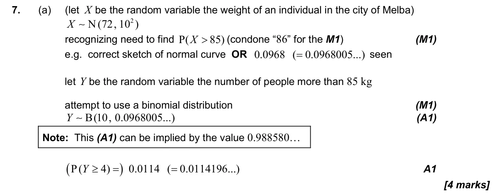
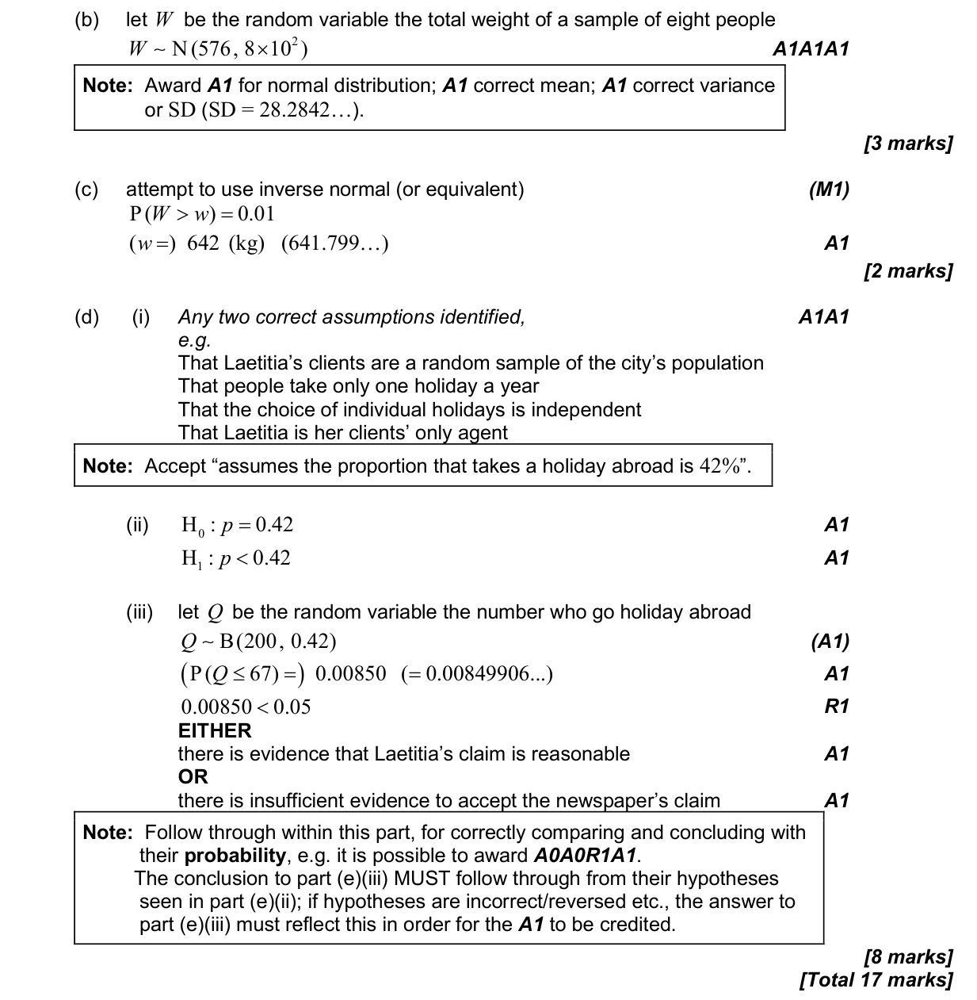

17 marks P2 TZ0 Calculator 4.18 Critical regions, tests for a mean, a proportion or a correlation, and type I and II errors4.15 Combining normal variables and the central limit theorem4.8 Binomial distribution4.9 Normal distribution and calculations Question Hide breakdown abcd Markscheme 